Quinta da Trovisca - rebrand
2016 / Label Design / Client: Vinoquel
Quinta da Trovisca full rebrand, including the creation of a new logo and the
design of the Port Wine range labels.
Graphic Design: Rafaela Lucas
Creative director: André Kelly Breda
Photos: Catarina
Nunes, André Kelly Breda
Brand Manager: Henri Sizaret
 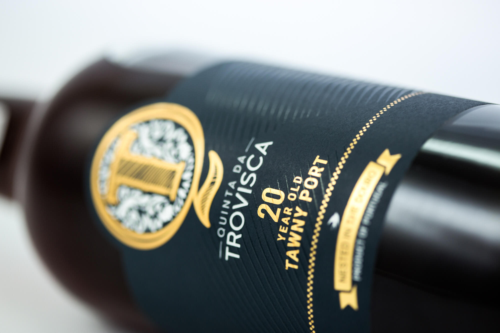
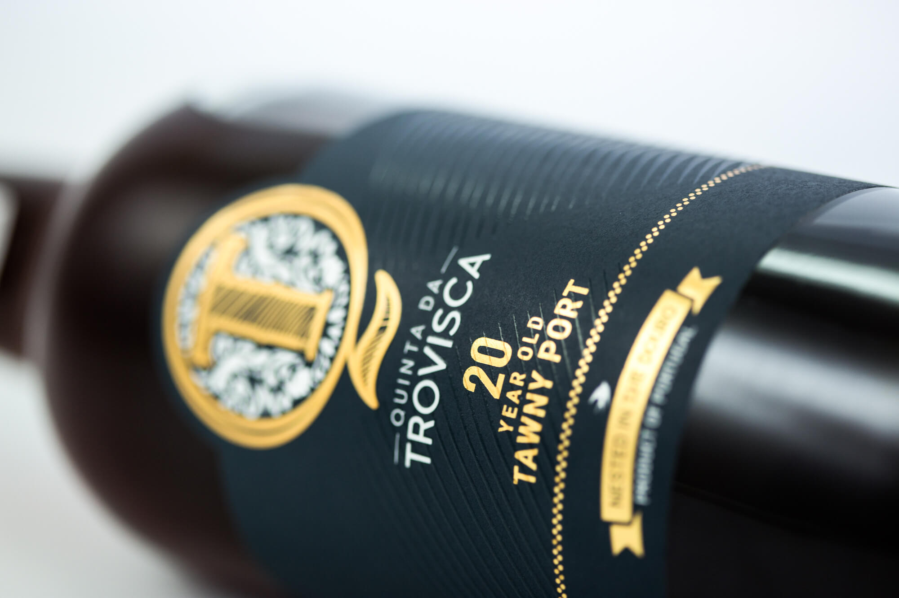


 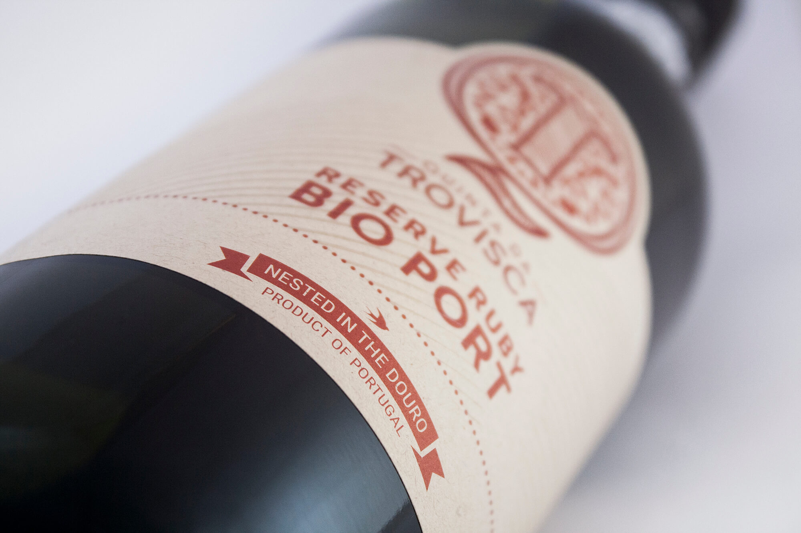
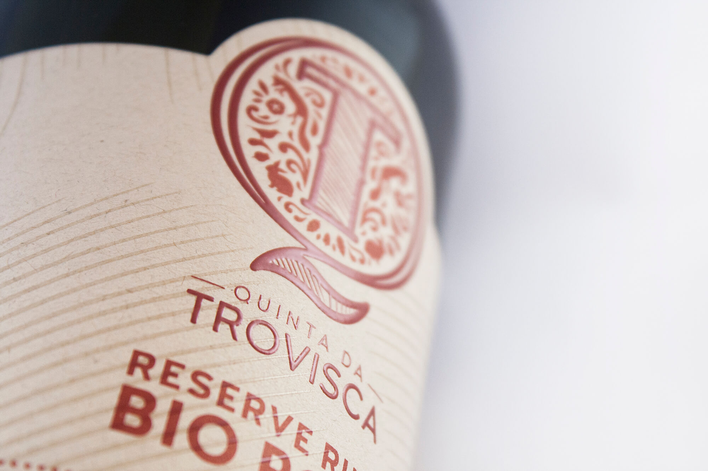
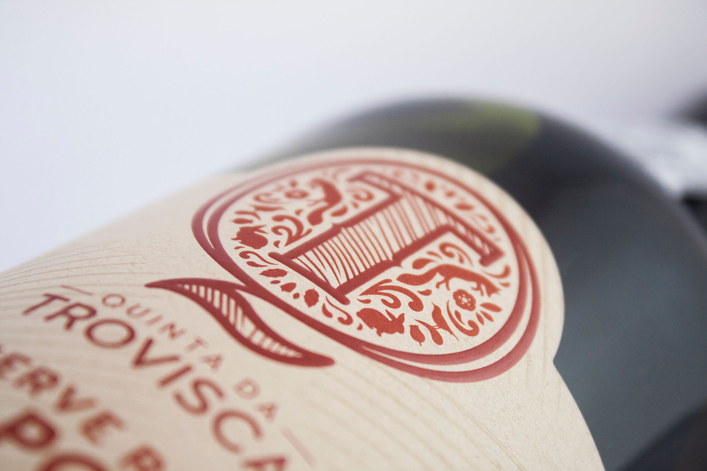
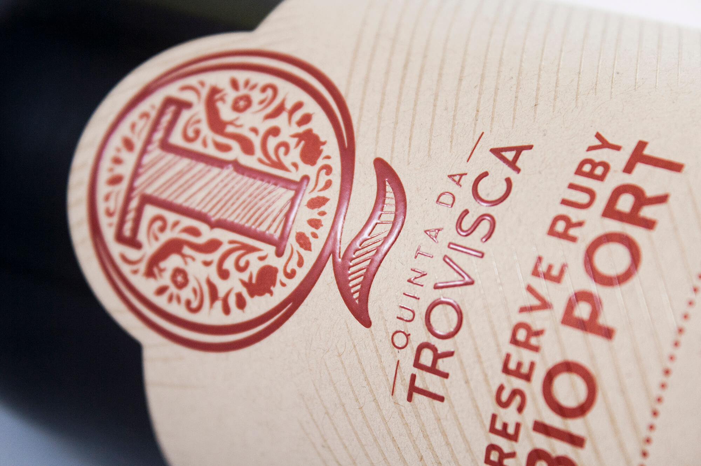
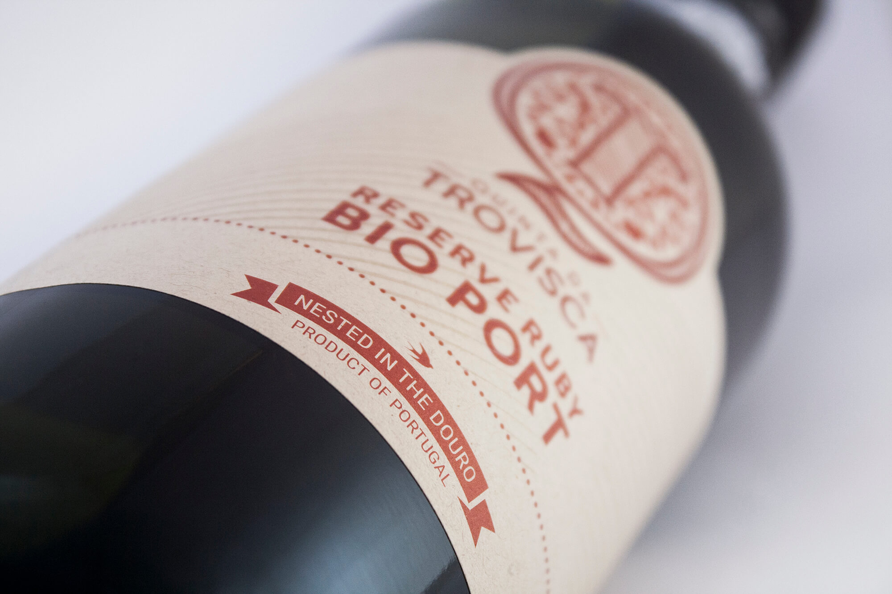
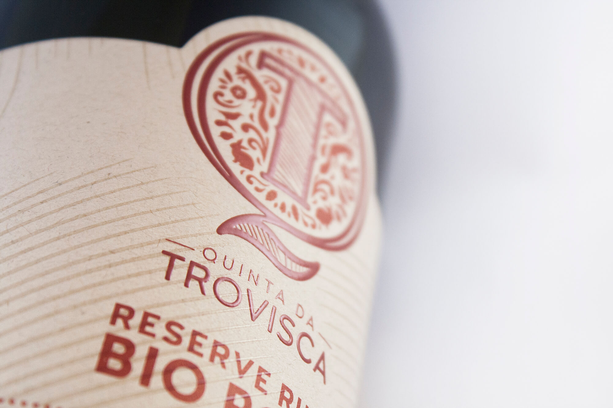
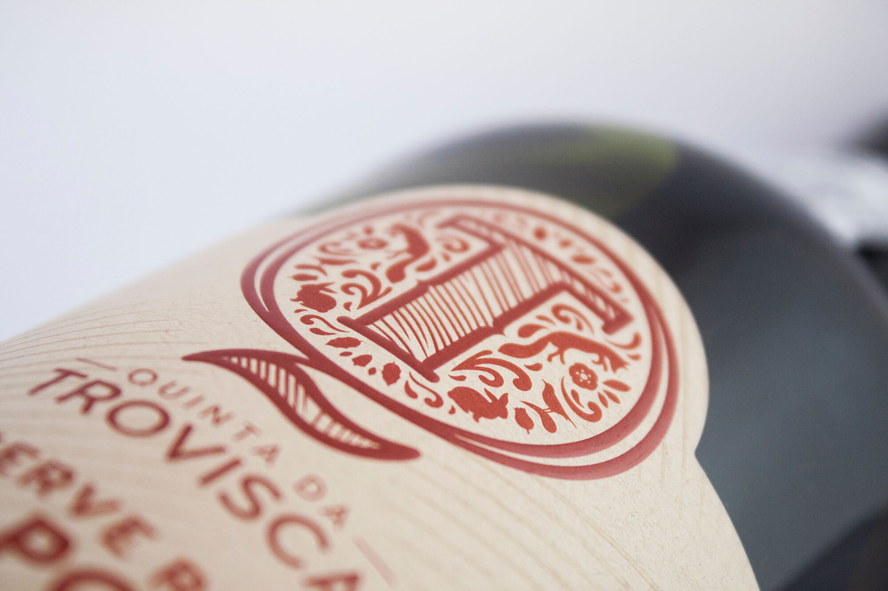
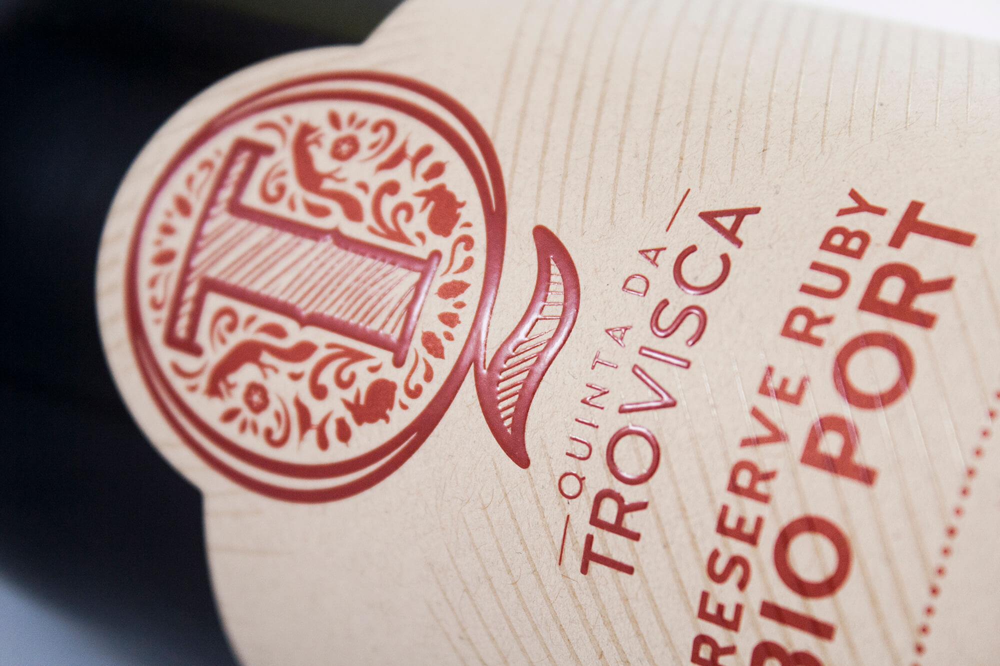

 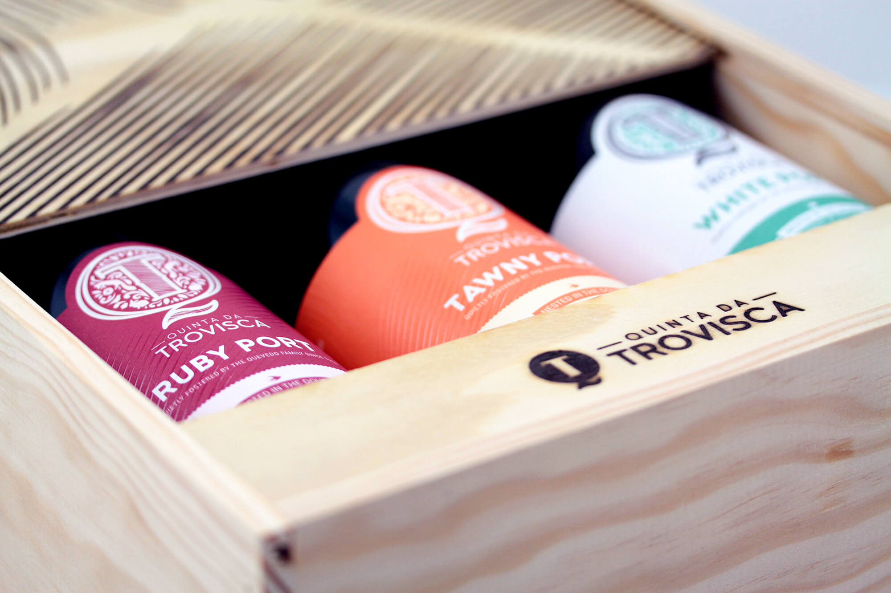
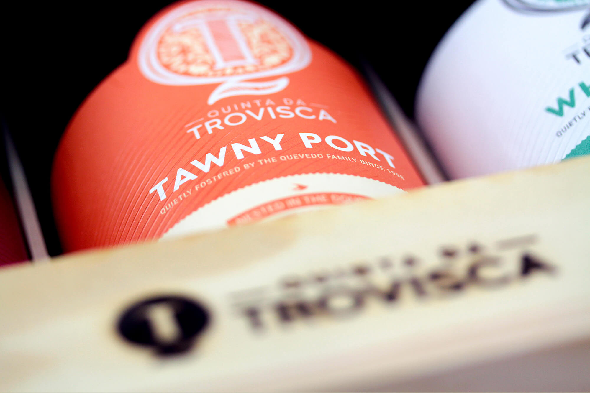
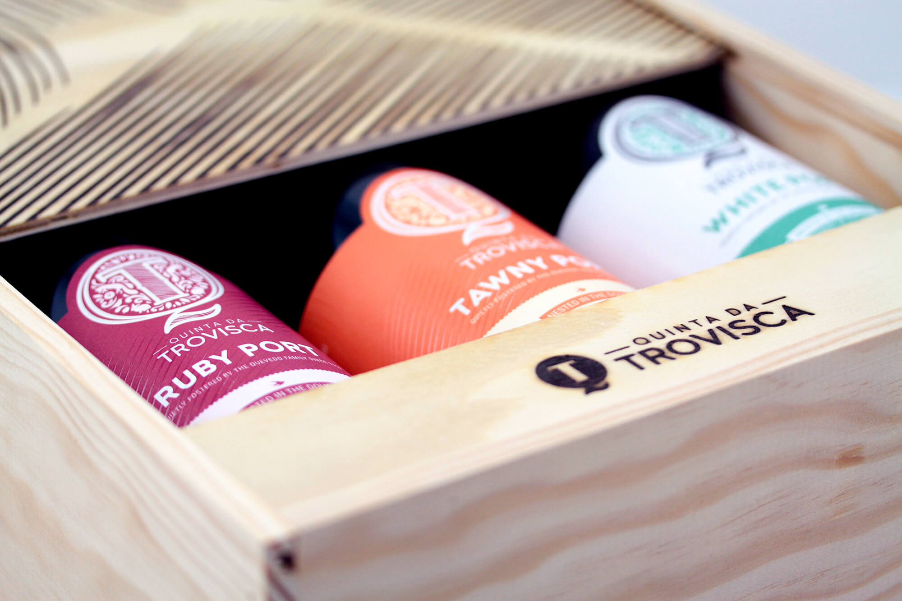
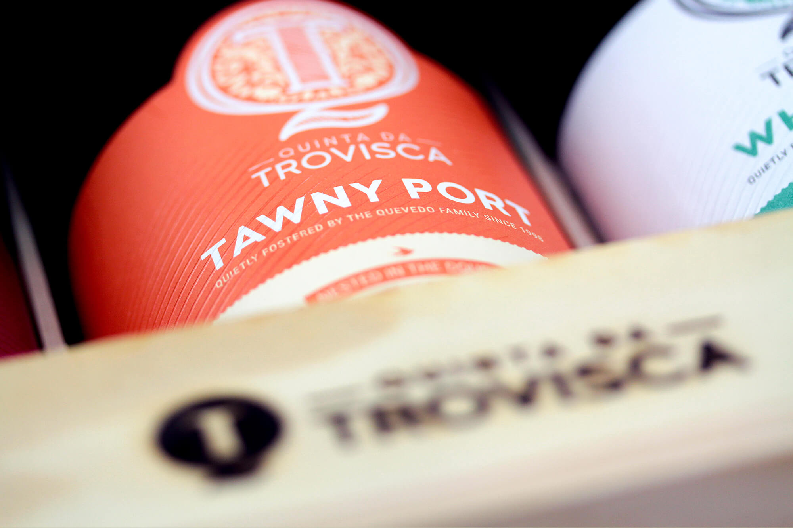

go back
back to top